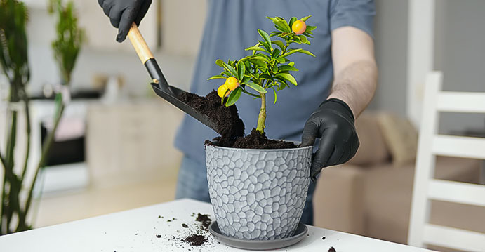
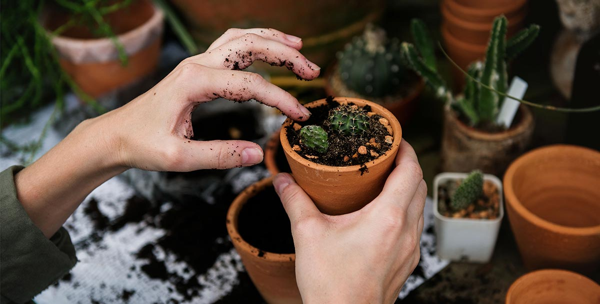

0
ورود/ثبت نام
خدمات مشاوره گل و گیاه آپارتمانی و گیاه پزشکی
خدمات مشاوره گل و گیاه آپارتمانی و گیاه پزشکی آنلاین و در محل
چرا خدمات مشاوره گیاه پزشکی گُلسِتان
خدمات مشاوره آنلاین گیاه پزشکی
شاید برگهای گیاه مورد علاقه شما به تازگی زرد رنگ شده است. شاید هم در یک روز چند گیاه مختلف خریدهاید و اطلاعی در مورد نحوه نگهداری از آنها ندارید و نیاز به مشاوره گیاه پزشکی دارید! در مورد نور مورد نیاز گیاهان سوالی دارید؟ آبیاری؟ گردش هوا؟
کافی است از طریق مشاوره آنلاین گل و گیاه با کارشناسان خبره گیاه پزشک گُلسِتان مشورت کنید و در مورد تمامی سوالات و نگرانیها خود با آنها حرف بزنید.
سایت گیاه پزشکی گُلسِتان بیماریهای گیاهان شما را درمان میکند
خدمات باغبانی در محل (سایر)
در هر کجای ایران که باشید میتوانید از اکثر خدمات باغبانی در محل، اعزام سریع باغبان گل و گیاه گُل سِتان استفاده کنید. کافیست موبایل خود را وارد کنید تا به راحتی آب خوردن در کمتر از 10 دقیقه با شما تماس بگیرم و کار را شروع کنیم. در تیم ما افرادی دارای تخصص های طراحی دکوراسیون، مهندس زبده باغبانی و گیاه پزشکی و باغبانان مجرب برای ارائه خدمت به شما حضور دارند. همه افرادی با تجربه و قابل اعتمادی هستند که صلاحیتشان تایید شده و آموزش های لازم را دیدهاند.
دریافت خدمات باغبانی سایر

مشاوره آنلاین گیاه آپارتمانی (گیاه پزشکی)
این روزها، اینترنت از مطالب مختلف پر شده است و هیچ فیلتری برای انتشار اطلاعات صحیح وجود ندارد. به همین
دلیل خیلی اوقات طبق نکات نوشته شده در فضای مجازی عمل میکنید اما نتیجهای
حاصل نمیشود. این خود دلیلی بر استفاده از خدمات مشاوره گیاه پزشکی است.
گیاه پزشکان ما از حرفهایترین افراد این زمینه هستند و میتوانند به بهترین نحو شما را برای
دستیابی به گیاهانی سالم و ایدهآل راهنمایی کنند. پس از اینکه سوال خود را
از مشاوران ما پرسیدید منتظر باشید تا به شما پاسخ بدهند. هنگامی که پاسخ
از طرف گیاه پزشک داده شد، برای شما یک پیامک اطلاع رسانی ارسال خواهد شد.
داشتن گیاهانی سالم و سرحال
نیازمند داشتن اطلاعات لازم در مورد روش نگهداری گیاهان مختلف بهاضافه تجربه است. طبیعی است
که همه ما چنین اطلاعاتی نداشته و ممکن است در طول نگهداری از گیاهان آپارتمانی خود به
مشکل بخوریم. در چنین شرایطی راهنمایی گرفتن از یک مشاور گیاه پزشک بهترین انتخاب است،
چرا که یک گیاه پزشک، تجربه و دانش لازم را داشته و بهراحتی از پس حل مشکلات گیاه شما بر
میآید. ازاینرو در گُلسِتان ضرورت وجود خدمات مشاوره آنلاین گیاه پزشکی را دیدیم و درصدد
راهاندازی یک سرویس خدمات مشاوره گیاهان آپارتمانی به صورت آنلاین برآمدیم. اما اگر
خودتان فرصت رسیدگی و انجام تجویزهای دکتر گیاه پزشک را ندارید از خدمات
باغبانی گُل سِتان استفاده نمائید. در ادامه بیشتر در مورد خدمات مشاوره
گیاه آپارتمانی گُلسِتان و انواع آن برایتان خواهیم گفت.
مشاوره گیاه پزشکی قبل از خرید گیاه
بدونشک همه گیاهان شرایط نگهداری یکسانی نداشته و هر کدام شرایط خاص خود را دارند. در مشاوره قبل از خرید سرویس خدمات مشاوره گیاه پزشکی گُلسِتان ما با درنظر گرفتن شرایط محیط زندگی و متراژ فضا و همچنین سبک زندگی شما، لیستی از گیاهان مناسب برای محیط زندگیتان را به شما خواهیم داد. ضمن اینکه در مورد گیاهانی که نمیتوانید در خانهتان نگهداری کنید نیز به شما خواهیم گفت.
برای مراجعه حضوری گیاه پزشک در تهران نیز میتوانید با ما تماس بگیرید.
مشاوره چیدمان گیاه
در این خدمت در مورد چیدمان گیاهان، اینکه هر گیاه در کدام قسمت از منزل شما قرار بگیرد به شما خواهیم گفت
مشاوره در مورد نگهداری گل آپارتمانی
در سرویس مشاوره در مورد نگهداری گیاهان گُلسِتان، متخصصین ما همه آنچه برای نگ
هداری از گیاهان آپارتمانی خود به آن نیاز دارید را در اختیار شما قرار خواهند داد
. مشاورههای کلینیک گیاه پزشکی گُلسِتان شامل موارد زیر میشوند
- ارزیابی موقعیت نور خورشید دریافتی محیط
- ارزیابی دما و رطوبت
- ارزیابی گلدان و نوع خاک
- پیشنهاداتی برای جلوگیری و درمان آفات
- پیشنهاداتی برای بهبود سلامت گیاه
- توصیههایی در خصوص تکثیر گیاه
- نکات هرس کردن و کوددهی
چطور از سرویس خدمات مشاوره نگهداری گیاه گُلسِتان استفاده کنیم؟
ابتدا در پلتفرم ثبت نام کنید. با وارد کردن نام و نا
م خانوادگی و شماره همراه، برای شما یک کد احراز هویت ارسال خواهد شد. پس از
بررسی کد احراز هویت شما در سامانه ثبت نام میشوید. سپس سامانه چت مشاور
ه با گیاه پزشک به شما نمایش داده میشود. با پرداخت هزینه مشاوره شما
میتوانید، تمامی سوالات خود را از مشاورین گُلسِتان بپرسید.
مشاوران گیاه پزشکی ما از شنبه تا چهارشنبه از ساعت 8 الی 16 پاسخگوی شما عزیزان خوا
هند بود. به دلیل حجم بالای سوالات ممکن است، زمان پاسخگویی با ک
می تاخیر انجام شود. پیشاپیش از صبر و تحمل شما سپاسگزاریم
اورژانس گل و گیاه آپارتمانی گُل سِتان
اورژانس گل و گیاه گُل سِتان آماده ارائه مشاوره حرفه ای در زمینه گیاهان به شما عزیزان سراسر ایران می باشد
7 عامل مهم برای نگهداری از گیاهان در منزل و محل
کارآبیاری، نور، خاک، دما، رطوبت، کود و کنترل آفات می باشد. با
توجه به اینکه هر گیاه نیازش به این 7 عامل متفاوت می باشد
. باید توجه کنید که مطابق با نیاز آن به آنها رسیدگی کنید. آبیاری و نور مهمتر از سایر
موارد می باشد، این دو عامل می تواند بیشترین تاثیر را در رشد و نگهداری گیاه شما داشته باشد،
بیشتر گیاهان در خانه و شرکت ها به علت زیاد آب دادن پژمرده یا خشک می شوند. شما می توانید
در صورت بروز مشکل در گل و گیاه شما از خدمات مشاوره تلفنی گل و گیاه ما استفاده کنید و
با مشاورین متخصص دارای فوق لیسانس رشته باغبانی در رابطه با گیاهانتان مشورت کنید.
اگر شما هم نیاز به مشاوره گیاه پزشکی اینترنتی برای گیاه
ان آپارتمانی یا درختان خود دارید، میتوانید روی متخصصین گیاه پزشک گل و گیاه گُلسِتان حساب کنید و
از راهنماییهای آنها استفاده کنید. سایت گیاه پزشکی گُلسِتان با خبرهترین گیاه پزشکان آماده ارائه
خدمت به شما میباشد. مشاوره گیاه پزشکی گُل سِتان دارای تضمین برگشت وجه در صورت عدم رضایت میباشد

استفاده از مطالب گل فروشی اینترنتی گل ستان تنها برای مقاصد غیر تجاری و با ذکر منبع
بلامانع است. کلیه حقوق این سایت متعلق به
شرکت ارزش آفرینان فردای روشن (گل فروشی آنلاین گل ستان) است